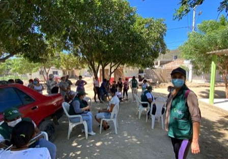

WhatsApp Surveys: An Innovative and Low-Cost Solution for Remote Data Collection
WhatsApp has become a powerful tool for data collection, offering a cost-effective, scalable, and user-friendly alternative to traditional survey methods. This guide provides an introduction to WhatsApp surveys, their benefits, limitations, and best practices based on IPA’s experience across various projects.

- WhatsApp surveys are a cost-effective and scalable solution for remote data collection.
- They offer higher response rates and real-time data collection compared to traditional methods.
- IPA has successfully used WhatsApp surveys in various projects, demonstrating their versatility and effectiveness.
WhatsApp has become a powerful tool for data collection, offering a cost-effective, scalable, and user-friendly alternative to traditional survey methods. At IPA, WhatsApp surveys have helped overcome challenges in reaching participants, especially during the COVID-19 pandemic. This page provides an introduction to WhatsApp surveys, their benefits, limitations, and best practices based on IPA’s experience.
Why Use WhatsApp for Surveys?
WhatsApp has over two billion active users globally and is widely adopted across different demographics and regions.
People are already comfortable using WhatsApp for communication. Surveys can be completed on smartphones, anytime, and anywhere.
WhatsApp reduces costs compared to traditional survey methods, creating savings on printing, fieldwork, and call center expenses.
WhatsApp supports images, videos, and audio files for interactive surveys, enhancing comprehension and engagement.
Data collection happens instantly, allowing for real-time monitoring and quick decision-making based on responses.
Familiarity with WhatsApp leads to increased participation. Evidence from IPA projects in Colombia, Senegal, and Guinea supports this finding.
WhatsApp Surveys at IPA
IPA has successfully implemented WhatsApp surveys in various projects across different regions.

Project Examples
- Monitoring Migration and Legal Status: A study by IPA Colombia on Colombia’s policy to grant legal status to Venezuelan migrants employed WhatsApp surveys to reach a mobile population. Even when phone numbers changed, WhatsApp numbers remained stable, improving follow-up success.
- Tracking Social Protection Interventions: Research teams used WhatsApp to communicate project details and schedule phone surveys for studies on entrepreneurship training and social protection during COVID-19.
- Assessing Program Spillovers: A project on socio-emotional skills employed WhatsApp surveys to track whether control group participants had received materials related to the intervention.
Advantages and Limitations
Key Benefits
- Verified WhatsApp Business Account: IPA uses a verified account with the organization’s logo as a profile picture, improving participant recognition and trust. The verified account displays IPA’s name instead of an unknown number, increasing response rates.
- Message Tracking: WhatsApp’s double-check marks allow researchers to monitor survey progress by identifying:
- Failed deliveries due to inactive phone numbers.
- Messages that participants received and read—subject to user privacy settings.
- Scalability and Multi-Format Engagement: The ability to send images, voice messages, and documents makes communication more effective.
- Real-Time Data Collection: Responses arrive instantly, allowing researchers to adapt their approach or follow up as needed.
Challenges and Considerations
- Participant Requirements: WhatsApp surveys work best with populations that have internet access, smartphones, and some level of technological literacy. This may limit sampling to specific geographic, age, and socioeconomic groups.
- No Enumerator Supervision: Without an enumerator present, verifying that participants understand survey questions can be difficult. To mitigate this, researchers should design surveys with clear, simple questions.
- Privacy Limitations: Some WhatsApp privacy settings may prevent researchers from knowing whether participants have read messages.
- Managing Expectations: In some cases, participants expected real-time human responses. Clarifying automated interactions upfront helps mitigate confusion.
The Role of Twilio in WhatsApp Surveys
Twilio is a cloud communication platform that allows organizations to send automated WhatsApp messages and conduct surveys. At IPA, Twilio supports:
- WhatsApp and SMS surveys.
- Interactive Voice Response (IVR) surveys.
- Automated reminders for data collection visits.
- Virtual call center support through WhatsApp, voice, and video.
Twilio has undergone testing in multiple IPA projects, including Peace and Education Program, Think Equal, Unidades Económicas Productivas de Antioquia, Ingreso Solidario, Play to Learn, Estatuto Temporal de Protección para Venezolanos, Sisbén, and Lego. Due to its success, other IPA regional offices have adopted it for data collection and participant engagement.
The Global Research and Data Science, GRDS, team provides support in planning and programming surveys or interventions through WhatsApp, SMS, and IVR using Twilio.
Every data collection method has its trade-offs, and this guide does not compare all available options. For IPA, particularly during the disruptions of COVID-19, WhatsApp surveys proved to be a versatile and effective tool for remote data collection. The more experience researchers gain, the better they become at using them. If WhatsApp surveys might be useful for your study, consider giving them a try.